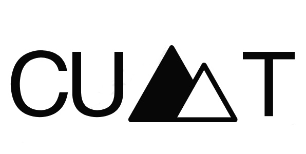

Apple
Huawei
手机，是现代社会极其重要的通讯工具，曾被誉为
20世纪最伟大的发明之一。手机在早期体积非常大，
大小与砖头差不多，因此又被称为“板砖电话”，
“水壶电话”等。早期手机的著名代表诺基亚，摩托
罗拉等，尔后有更多的牌子出现，两大老牌逐渐淡出
市场。2009年，触摸屏技术发生飞跃性的突破，原本
只属于国家拥有的触摸屏开始广泛进入民间，2012年，
全世界将近50%的手机都使用了触摸屏技术。2015年后，
世界范围内80%的手机和智能产品都实现了触控智能化。
现今手机的著名代表：
外国品牌：iphone，三星电子，黑莓。
中国品牌：华为，魅族，小米，oppo，vivo，TCL，步步高